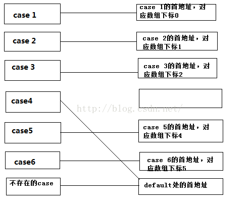
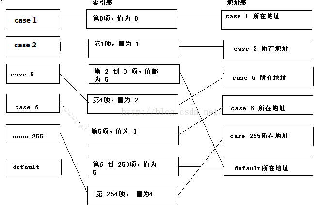
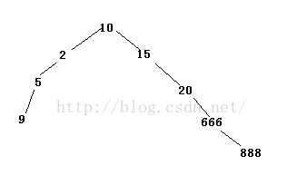

条件语句是计算机编程语言中的三大流程之一，而在C语言中，if和switch是条件分支的重要组成部分。因此有必要弄明白它的底层原理
if原理
if的功能是计算判断条件的值，根据返回的值的不同来决定跳转到哪个部分。值为真则跳转到if语句块中，否则跳过if语句块。下面来分析一个简单的if实例：
1 | if(argc > 0) |
它对应的汇编代码如下：
1 | 9: if(argc > 0) |
根据汇编代码我们看到，首先执行第一个if中的比较，jle表示当cmp得到的结果≤0时会进行跳转，第二个if在汇编中的跳转条件是＞0，从这个上面可以看出在代码执行过程当中if转换的条件判断语句与if的判断结果时相反的，也就是说cmp比较后不成立则跳转，成立则向下执行。同时每一次跳转都是到当前if语句的下一条语句。
下面来看看if…else…语句的跳转。
1 | if(argc > 0) |
它所对应的汇编代码如下：
1 | 00401028 cmp dword ptr [ebp+8],0 |
上述的汇编代码指出，对于if…else..语句，首先进行条件判断，if表达式为真，则继续执行if快中的语句，然后利用jmp跳转到else语句块外，否则会利用jmp跳转到else语句块中，然后依次执行其后的每一句代码。
最后再来展示if…else if…else这种分支结构：
1 | if(argc > 0) |
汇编代码如下：
1 | 9: if(argc > 0) |
通过汇编代码可以看到对于这种结构，会依次判断每个if语句中的条件，当有一个满足，执行完对应语句块中的代码后，会直接调转到分支结构外部，当前面的条件都不满足则会执行else语句块中的内容。这个逻辑结构在某些情况下可以利用if return if return 这种结构来替代。当某一条件满足时执行完对应的语句后直接返回而不执行其后的代码。一条提升效率的做法是将最有可能满足的条件放在前面进行比较，这样可以减少比较次数，提升效率。
switch原理
switch是另一种比较常用的多分支结构，在使用上比较简单，效率上也比if…else if…else高，下面将分析switch结构的实现
1 | switch(argc) |
对应的汇编代码如下:
1 | 0040B798 mov eax,dword ptr [ebp+8] ;eax = argc |
上面的代码中并没有看到像if那样，对每一个条件都进行比较，其中有一句话 “jmp dword ptr [edx*4+40B831h]” 这句话从表面上看应该是取数组中的元素，再根据元素的值来进行跳转,而这个元素在数组中的位置与eax也就是与argc的值有关，下面我们跟踪到数组中查看数组的元素值：
0040B831 B7 B7 40 00
0040B835 C6 B7 40 00
0040B839 D5 B7 40 00
0040B83D E4 B7 40 00
0040B841 F3 B7 40 00
0040B845 02 B8 40 00
通过对比可以发现0x0040b7b7是case 1处的地址，后面的分别是case 2、case 3、case 4、case 5、case 6处的地址，每个case中的break语句都翻译为了同一句话“jmp $L544+1Ch (0040b81e)”，所以从这可以看出，在switch中，编译器多增加了一个数组用于存储每个case对应的地址，根据switch中传入的整数在数组中查到到对应的地址，直接通过这个地址跳转到对应的位置，减少了比较操作，提升了效率。编译器在处理switch时会首先校验不满足所有case的情况，当这种情况发生时代码调转到default或者switch语句块之外。然后将传入的整数值减一（数组元素是从0开始计数）。最后根据参数值找到应该跳转的位置。
上述的代码case是从0~6依次递增，这样做确实可行，但是当我们在case中的值并不是依次递增的话会怎样？此时根据不同的情况编译器会做不同的处理。
1）一般仍然会建立这样的一个表，将case中出现的值填写对应的跳转地址，没有出现的则将这个地址值填入default对应的地址或者switch语句结束的地址，比如当我们上述的代码去掉case 5， 这个时候填入的地址值如下图所示：

2）如果每两个case之间的差距大于6，或者case语句数小于4则不会采取这种做法，如果再采用这种方式，那么会造成较大的资源消耗。这个时候编译器会采用索引表的方式来进行地址的跳转。
下面有这样一个例子：
1 | switch(argc) |
它对应的汇编代码如下：
1 | 0040B798 mov eax,dword ptr [ebp+8] |
这段代码与上述的线性表相比较区别并不大，只是多了一句 “mov dl,byte ptr (0040b843)[eax]” 这似乎又是一个数组，通过查看内存可以知道这个数组的值分别为：00 01 05 05 02 03 05 05 … 04，下一句根据这些值在另外一个数组中查找数据，我们列出另外一个数组的值：
C2 B7 40 00 D1 B7 40 00 E0 B7 40 00 EF B7 40 00 FE B7 40 00 0B B8 40 00
通过对比我们发现，这些值分别是每个case与default入口处的地址，编译器先查找到每个值在数组中对应的元素位置，然后根据这个位置值再在地址表中从、找到地址进行跳转，这个过程可以用下面的图来表示：

这样通过一个每个元素占一个字节的表，来表示对应的case在地址表中所对应的位置，从而跳转到对应的地址，这样通过对每个case增加一个字节的内存消耗来达到，减少地址表对应的内存消耗。
在上述的汇编代码中，是利用dl寄存器来存储对应case在地址表中项，这样就会产生一个问题，当case 值大于 255，也就是超出了一个字节的，超出了dl寄存器的表示范围时，又该如何来进行跳转这个时候编译器会采用判定树的方式来进行判定，在根节点保存的是所有case值的中位数， 左子树都是大于这个大于这个值的数，右字数是小于这个值的数，通过每次的比较来得到正确的地址。比如下面的这个判定树：

首先与10进行比较，根据与10 的大小关系进入左子树或者右子树，再看看左右子树的分支是否不大于3，若不大于3则直接转化为对应的if…else if… else结构，大于3则检测分支是否满足上述的优化条件，满足则进行对应的地址表或者索引表的优化，否则会再次对子树进行优化，以便减少比较次数。